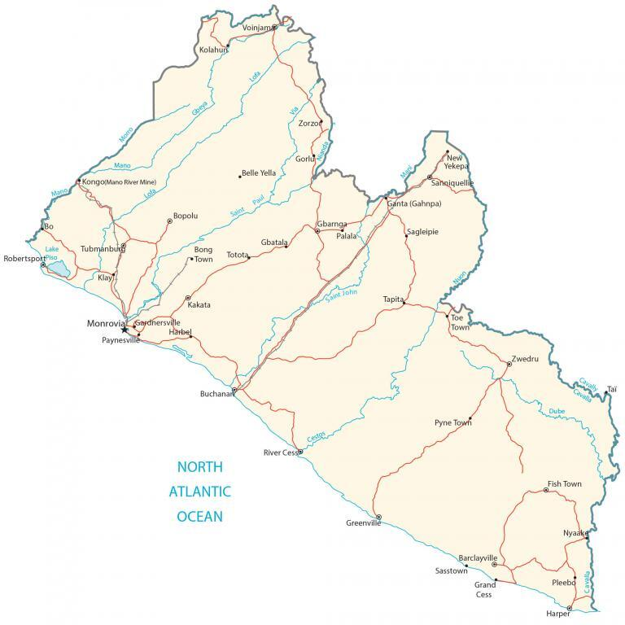

Liberia is located in Western Africa, along the coast of the Atlantic Ocean. It borders 3 other African countries including Sierra Leone to the northwest, Guinea to the north, and Ivory Coast to the east. Its coastline is 580 kilometers (360 mi) in length with the Atlantic Ocean. The country is known for its long-standing civil war, being Africa’s oldest republic, and its clean cities.
Monrovia is the capital and largest city in Liberia. Other major cities are Gbarnga, Kakata, and Bensonville. Liberia’s landscape is mostly flat plains with some rolling hills in the northeast and southeast.
Go back home